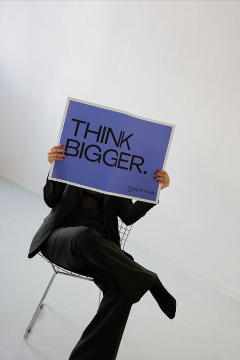

Ethan Blackwood

Ethan Blackwood grew up in a small, coastal town, where he spent most of his childhood tinkering with electronics and teaching himself to code. As a shy and introverted teenager, Ethan found solace in music, spending hours in his makeshift home studio, experimenting with beats and melodies. After completing high school, Ethan enrolled in a local college, studying computer science and music production. However, it wasn't until he stumbled upon an underground electronic music scene that he discovered his true calling – and the persona of Freighter Bite was born.
Fun Facts

- Freighter Bite has a pet cat named "Synth" who loves to sleep on his keyboard while he's working on new music.
- Freighter Bite is an avid gamer and loves playing "Warioland 4" in his free time. Which also explains why his music is weird but cool
- reighter Bite has an irrational fear of clowns and will avoid going to events where clowns might be present.
- Freighter Bite draws inspiration from Lady Gaga, and secretly Ariana Grande, odd combination but it works for his rebellious sound.
Favorite Quotes
- "Art is the only way to run away without leaving home." - Twyla Tharp
- "You don't have to be great to start, but you have to start to be great." - Zig Ziglar
- "Music is the medicine of the breaking heart." - Lehman Engel
- "I'm not just creating music, I'm creating a world, a universe of sound and color." - Unknown
- "My music is a wild ride, buckle up and enjoy the journey." - Unknown
- 3. "We're interested in the line between reality and fiction, and we're looking for ways to blur that line." - Daft Punk